WHEN WE HEAR THE WORD WAR,
we think of soldiers, weapons and destruction.
BUT THERE IS ANOTHER BATTLEFIELD: THE BATTLEFIELD OF MONEY.
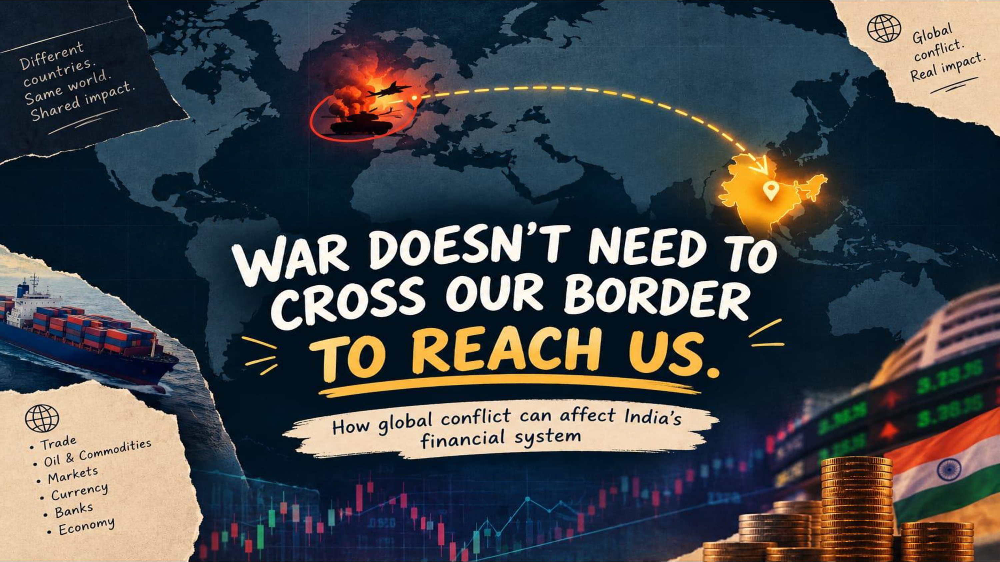
TODAY, COUNTRIES ARE DEEPLY CONNECTED.
WAR DOESN'T STOP AT THE BATTLEFIELD.
A financial shock that can travel from one country to another.
HOW WAR AFFECTS
THE INDIAN ECONOMY
& ITS FINANCIAL SYSTEM
"Instead of looking at war only as a military event, let's look at it as a financial shock that can travel from one country to another. We are a team of 10 members, and each of us will explain a different part of the topic."
How War Affects the Indian Economy & Its Financial System
“When we hear the word war, the first things that come to our mind are soldiers, weapons and destruction. But there is another battlefield that we often don't see — the battlefield of money.”
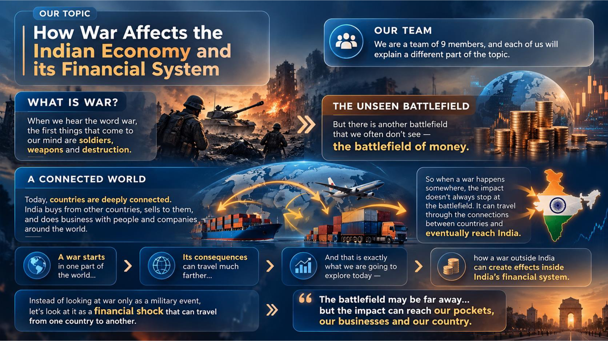
1. Oil & Energy Transmission HIGH IMPACT
Over 85% of domestic crude requirements are imported. Any disruption in West Asian maritime chokepoints triggers immediate landed cost spikes, widening the trade deficit.
2. Freight & Maritime Shipping
War-risk insurance premiums escalate 4x–8x. Rerouting via Africa adds 3,500 nautical miles, elevating container freight costs by 200–300% for Indian exporters.
3. Rupee & Exchange Rate Channel
Higher oil import payments heighten dollar demand. Global risk-off triggers foreign institutional capital outflows, creating structural downward pressure on the INR.
4. Financial Market Volatility
Spiking uncertainty expands equity equity-risk premia. Indian VIX surges, hitting valuation multiples for energy-intensive manufacturing and aviation.
5. Banking & Credit Vulnerability
Rising import prices strain working capital limits for MSMEs. Sustained inflationary rates force higher interest rates, elevating debt service burdens.
“Today, countries are deeply connected. When a war happens somewhere, the impact doesn't stop at the battlefield. It can travel through connections and eventually reach India. Let's look at it as a financial shock that can travel from one country to another. The battlefield may be far away… but the impact can reach our pockets, our businesses and our country.”
How War Hits Our Wallet – The Impact of War on Prices and Currency
“When supply decreases, prices increase. Higher oil prices raise transportation and production costs, which can make everyday products more expensive.”
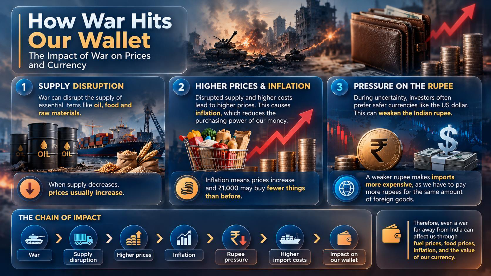
“Therefore, even a war far away from India can affect us through fuel prices, food prices, inflation, and the value of our currency.”
How War Meets the Market
“Wars can create short-term uncertainty and sharp market swings. India is particularly exposed when conflict disrupts oil supplies, because higher import costs can affect inflation, the rupee and company profits.”
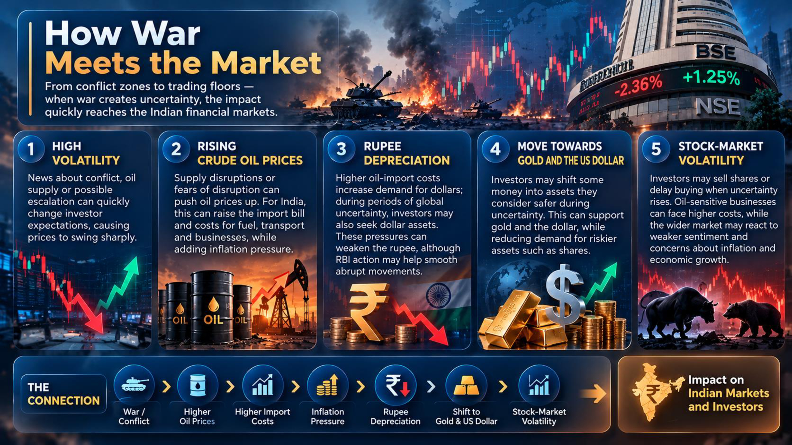
Sectoral Impact Heatmap
Hover for Exposure AnalysisHow War Puts the Stock Market Under Pressure
“So far, we have seen how wars affect different sectors and the Indian economy. Now, let's step into the shoes of investors and look at their impact on the Indian stock market — Sensex and Nifty 50.”
Banking Stress-Testing Framework
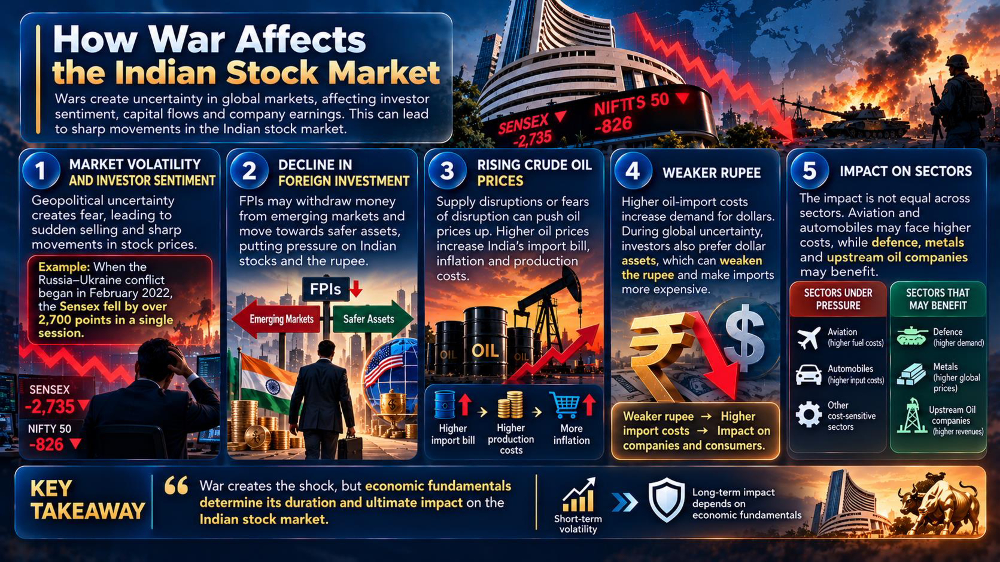
“War creates the shock, but economic fundamentals determine its duration and ultimate impact on the Indian stock market.”
Impact of War on the Indian Economy
“War affects India in many ways — leading to unemployment, lower economic growth, higher food prices, international trade disturbances, and financial hardships for poor and middle-class families.”
Macro Transmission Architecture
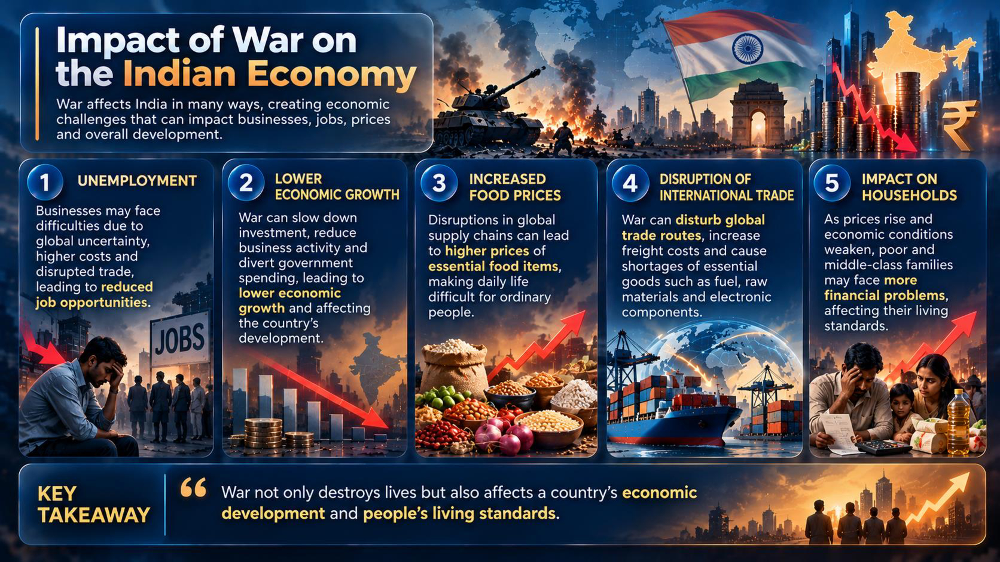
Macro Sensitivity & Twin Deficit Shield
1. Unemployment & Job Contraction
Businesses face operational difficulties and reduce job opportunities
2. Lower Economic Growth
Slower GDP expansion affecting the country's overall development
3. Higher Food & Essential Prices
Transportation and input costs make daily life difficult for ordinary people
4. Trade Disturbance & Supply Shortages
Global supply disruptions create critical shortages of essential goods
5. Burden on Poor & Middle-Class Families
Inflation directly erodes household savings and disposable income
“To conclude, war not only destroys lives but also affects a country's economic development and people's living standards.”
How War Affects the Indian Government & Its Response
“Roughly one out of every ten seafarers globally is Indian. When commercial ships come under attack, protecting citizens, defending trade lanes, and diplomatic action become national imperatives.”
- 1 in 10 Seafarers Globally: Indian sailors and marine engineers operate globally. Working on commercial ships suddenly placed into active war zones.
- Commercial Ship Attacks: Protecting sailors' lives, raising urgent concerns with foreign governments, and firmly condemning hostile strikes.
- Naval Escort Action: Active deployment of Indian Navy frigates to secure merchant vessels and evacuate personnel if needed.
- Halt Energy Attacks: Cease strikes on power, fuel facilities, and critical economic infrastructure.
- Open Black Sea Ports: Ensure safe unimpeded passage for essential grain and energy commodities.
- Protect Merchant Vessels: Stop attacks on commercial shipping to keep maritime trade lines secure and peaceful.
- Shipping Route Security: India relies on international shipping for crude oil and vital raw materials; route blocks spike transport bills.
- Budgetary Cushioning: Absorbing freight inflation and subsidizing critical inputs to insulate the domestic economy.
- Diplomatic Autonomy: Maintaining multi-vector diplomatic ties to ensure continuous, unhindered energy supplies.
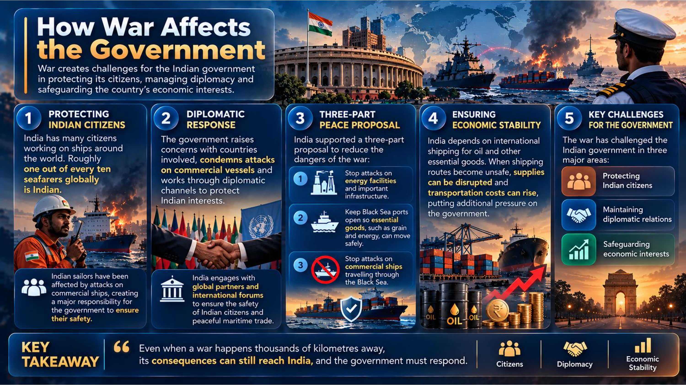
“To conclude, the war has challenged the Indian government in three major areas: protecting Indian citizens, maintaining diplomatic relations, and safeguarding economic interests. This shows that even when a war happens thousands of kilometres away, its consequences can still reach India, and the government must respond.”
Challenges India Faces
“Now that we have seen how war affects different parts of the financial system, let us look at the major challenges India may face.”
Structural Vulnerability Architecture
Downstream economic propagation vs multi-vector strategic exposure matrix.
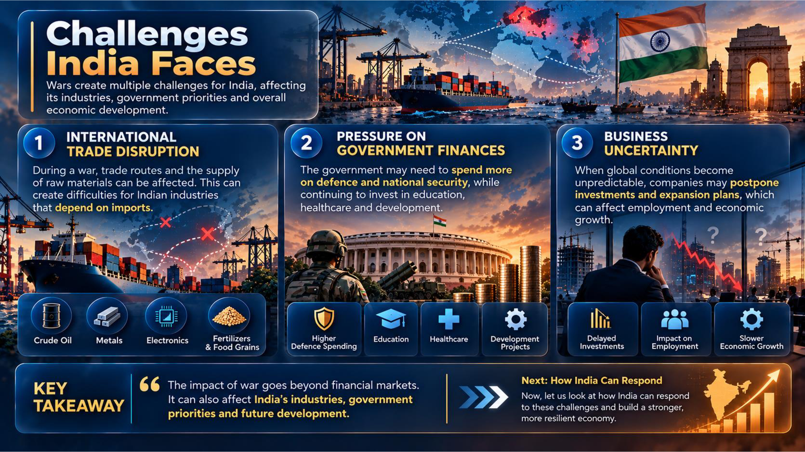
“So, the impact of war goes beyond financial markets. It can also affect India's industries, government priorities and future development. Now, let us look at how India can respond to these challenges and build a stronger, more resilient economy.”
Solutions: How India Can Respond
“India may not be able to control global conflicts, but it can prepare itself to face their economic consequences. A strong economy is not one that never faces challenges, but one that can withstand them and recover.”
Strategic Solutions Framework
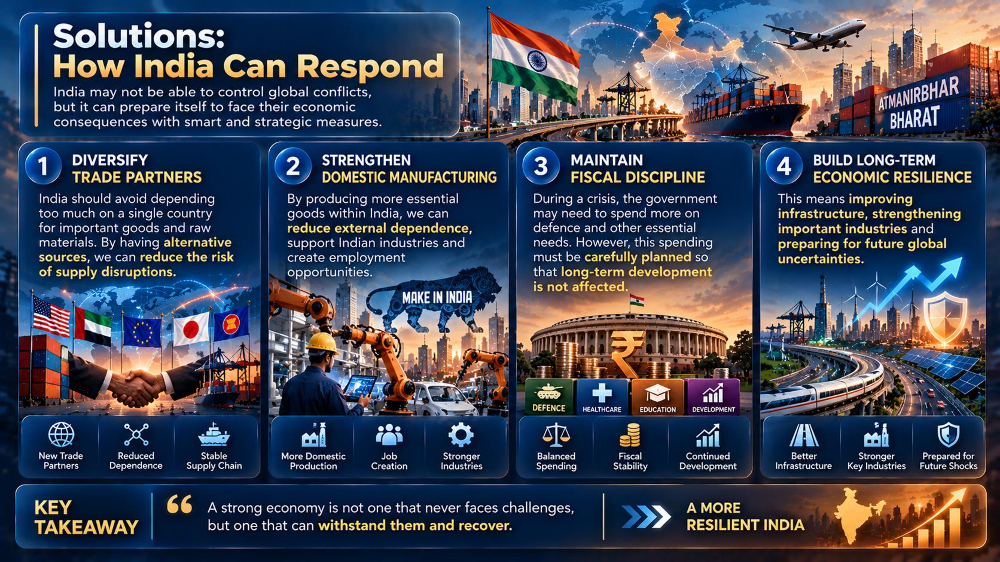

Today: Dynamic Resilience Shield
Expanding procurement across 39+ nations while rapidly scaling domestic manufacturing via PLI initiatives reduces imported vulnerability across oil, fertilizer, and high-tech components.
Balancing crisis defence spending with protected social and developmental budgets — anchored by a $650B+ forex fortress and domestic banking capital stability.
“To conclude, India may not be able to control global conflicts, but it can prepare itself to face their economic consequences. A strong economy is not one that never faces challenges, but one that can withstand them and recover.”
Long-Term Impacts of War on India
“The effects of war can continue long after the fighting, shaping prices, public finances, investment, jobs and trade.”
Long-Term Economic Impact Pathways
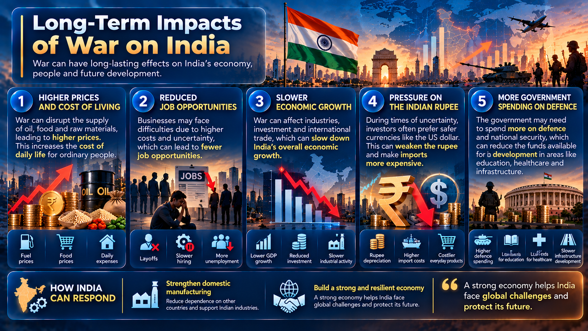
| Long-Term Area | How Effects Persist | Potential Long-Run Cost | Resilience Direction |
|---|---|---|---|
| Household Purchasing Power | Energy and freight costs can pass through to food, transport and everyday goods. | Prolonged real-income pressure, felt most by lower-income households. | Targeted relief, strategic reserves and more efficient supply chains. |
| Investment & Employment | Uncertainty and higher input costs can delay expansion and hiring. | Slower capital formation, job creation and productivity growth. | Policy predictability, skills investment and support for viable businesses. |
| Public Finances | Defence, relief and subsidy needs may remain elevated after an acute shock. | Less fiscal room for infrastructure and social development. | Prudent budgeting and well-targeted support. |
| Trade & Energy Security | Disruptions can reshape supplier relationships and import routes. | Continued exposure to concentrated sources and chokepoints. | Diversify suppliers and expand dependable domestic capacity. |
| Industry & Productivity | Input shortages and rerouted supply chains can constrain production. | Higher operating costs and delayed industrial upgrading. | Resilient logistics, strategic stocks and diversified sourcing. |
How the Effects Can Last
1. Household Costs: Persistent energy and transport pressures can keep prices high and reduce purchasing power, especially for lower-income families.
2. Investment, Jobs and Growth: Uncertainty and costlier inputs can delay business investment, slow hiring and weaken long-term productivity.
3. Public Finances: Higher defence, relief and subsidy needs can compete with spending on infrastructure, health and education.
4. Trade and Energy Security: Disrupted supply relationships can push India to diversify suppliers and build domestic capacity, a shift that takes time and investment.
“The costs can outlast the conflict, influencing household budgets, government priorities and the direction of investment.”
“Reducing long-term harm means protecting people now while investing in a more adaptable economy.”
Conclusion: Preparing India for War’s Financial Impact
“We may not be able to prevent every war, but we can prepare our economy to withstand its financial impact.”
Select a priority to see how it can strengthen India’s response.
“We may not be able to prevent every war, but we can prepare our economy to withstand its financial impact.”
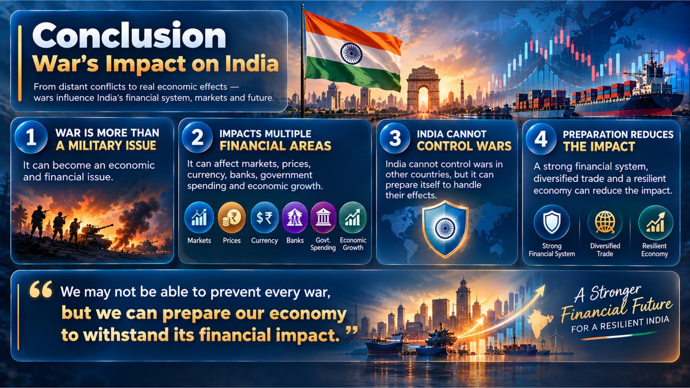